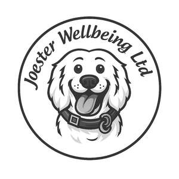

Trade Mark Journal No.2025/051 19 December 2025
UK00004307516 9 December 2025 (16,18,21,25,28)

- Class 16
- Books; Resource books; Sticker books; Baby books; Drawing books; Music books; Recipe books; Cookery books; Cook books; Activity books; Coloring books; Fiction books; Story books; Hand books; Prayer books; Flip books; Gift books; Religious books; Information books; Fantasy books; Printed books; Picture books; Painting books; Music note books; Printed coloring books; Printed cook books; Printed recipe books; Children's books; Books for children; Printed comic books; Baby memory books; Printed story books; Non-fiction books; Graphic art books; Printed picture books; Manga comic books; Children's activity books; Printed children's books; Writing or drawing books; Printed manga comic books; Computer game hint books; Series of fiction books; Books featuring fictional stories; Books featuring fantasy stories; Scratch books for drawing; Protective covers for books; Printed children's activity books; Jackets of paper for books; Series of non-fiction books; Rule books for playing games; Strategy guide books for card games; Series of computer game hint books; Printed strategy guide books for card games; Children's books incorporating an audio component; Printed books in the field of music education; Books in the fields of games and gaming.
- Class 18
- Leather and imitations of leather; Animal skins and hides; Luggage and carrying bags; Umbrellas and parasols; Walking sticks; Whips, harness and saddlery; Collars, leashes and clothing for animals; luggage, bags, wallets and other carriers; grocery tote bags; tote bags; parts and fittings for the aforesaid goods.
- Class 21
- Household or kitchen utensils and containers; Cookware and tableware, except forks, knives and spoons; Combs and sponges; Brushes, except paintbrushes; Brush-making materials; Articles for cleaning purposes; Unworked or semi-worked glass, except building glass; Glassware, porcelain and earthenware; tableware, cookware and containers; glasses, drinking vessels and barware; Water bottles; Aluminum water bottles; Plastic water bottles; Water bottles sold empty; Water bottles for bicycles; Aluminum water bottles, empty; Empty water bottles for bicycles; Reusable stainless steel water bottles; Reusable plastic water bottles sold empty; Reusable stainless steel water bottles sold empty; coffee cups; coffee mugs; cups; cup lids; cup holders; drinking cups; plastic cups; tea cups; glass cups; double wall cups; cups made of earthenware; cups made of pottery; cups made of plastics; cups made of china; sippy cups; cups, not of precious metal; reusable drinking cups of camping; insulating sleeve holder for beverage cups; mugs; mug cosies; mug sleeves; mug trees; mug racks; insulated mugs; earthenware mugs; travel mugs; porcelain mugs; china mugs; glass mugs; ceramic mugs; mugs of porcelain; mugs of china; cups and mugs; mugs made of earthenware; mugs made of plastics; mugs made of china; mugs made of porcelain; drinking mugs made of porcelain; mugs made of fine bone china; parts and fittings for the aforesaid goods.
- Class 25
- Clothing, footwear, headwear; headgear; hats; woolly hats; beach hats; sun hats; rain hats; baseball hats; fashion hats; beanie hats; bucket hats; baseball caps and hats; caps; cycling caps; baseball caps; sports caps; sports caps and hats; shirts; rugby shirts; tee-shirts; t-shirts; casual shirts; sports shirts; short-sleeve shirts; short-sleeved t-shirts; parts and fittings for the aforesaid goods.
- Class 28
- Baby playthings.
Joester Wellbeing Limited
Representative: Stobbs